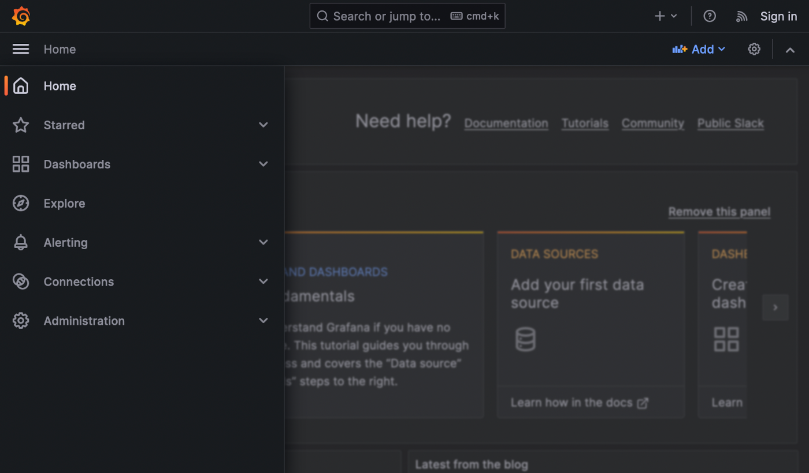

Grafana
Grafana is a platform for data monitoring and analytics, with support for common relational and time-series databases. It can also connect to Dremio, thanks to a plug-in developed by the Co-Innovation Lab.
- Support for Postgres, MySQL, Prometheus, MongoDB, etc.
- Visualize metrics, graphs, logs
- Create and customize dashboards
How to access
Grafana may be launched from Coder, using its template.
Add a data source
Extend the sidebar by clicking on the three-lines icon in the upper left.

Click Administration at the bottom. Click Data sources and then Add new data source.
Adding data sources
You may also add data sources from the Connections menu.
A list of supported data sources will appear.
Postgres
Many settings can be changed on the Postgres data source, but let's focus on the ones under PostgreSQL Connection, which you must fill to reach the database.
Since Grafana relies on time-series information to provide its monitoring features, ideally you want to create a new database, with tables with this functionality. However, if you just wish to test the tool, you can connect to the database that is created by default.
You can recover these values by launching a SQLPad workspace, accessing its Terminal (from the bottom above the logs in Coder) and typing env, which will list all the names and values of the environment variables of the tool.
Host: value ofSQLPAD_CONNECTIONS__pg__hostDatabase: value ofSQLPAD_CONNECTIONS__pg__name(should bemlrun)User: value ofSQLPAD_CONNECTIONS__pg__username(should bemlrun)Password: value ofSQLPAD_CONNECTIONS__pg__password
Once you have set these parameters, click Save & test at the bottom, and a green notification confirming database connection was successful should appear. You can click on Explore view to try running some SQL queries on the available tables.
Dremio
Dremio workspace
You need a Dremio workspace in order to add it as a data source in Grafana. You can create one from Coder.
Aside from a Name for the data source, it will ask for the following fields:
URL: you can find this in Coder: go to your Dremio workspace and look for an Entrypoint value (next to kubernetes_service), which you can click to copy. It may look similar to:http://dremio-digitalhub-dremio:9047.User:adminPassword: whichever Dremio Admin Password you entered when you created the Dremio workspace
Add a dashboard
Extend the sidebar by clicking on the three-lines icon in the upper left, click Dashboard and then New > New dashboard.
Let's add a simple panel. Click Add visualization and select one of the data sources you added, for example PostgreSQL. Grafana will automatically add a new panel to this new dashboard and open the Edit panel view for it.
On the bottom left, you can enter a query for a table in the database. Once you do that and click Run query in the same section, the message Data is missing a time field will likely appear. This is because the table you chose does not have a field for time-series and, by default, new panels are assumed to be for Time series.
If you simply click on the Switch to table button that appears, you will see the query's results. More interestingly, if you click Open visualization suggesions, or extend the visualization selection (in the upper right, where it says Time series or Table, depending on whether you clicked Switch to table or not), you will be able to explore a variety visualization options for your query.